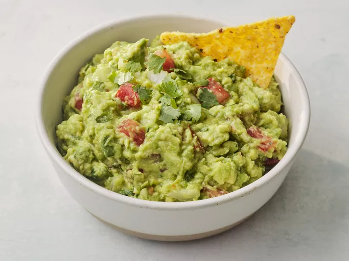

Guacamole

Description
This homemade guacamole made with ripe avocados and lime juice gets a tasty kick from cayenne and cilantro.
You can serve it smooth or chunky depending on your tastes. Serve with tortilla chips.
Ingredients
- Avocados
- Lime
- Salt
- Herbs and spices
Steps
- Mash avocados, lime juice, and salt together in a medium bowl; mix in tomatoes, onion, cilantro, and garlic.
- Stir in cayenne pepper. Serve immediately, or cover and refrigerate for 1 hour for improved flavor.
Home